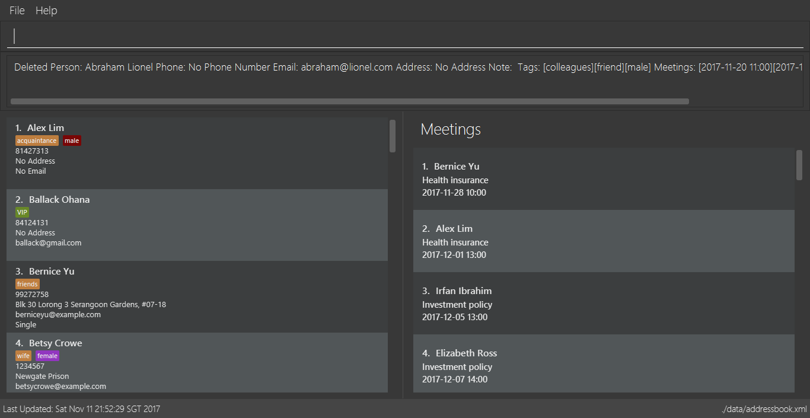
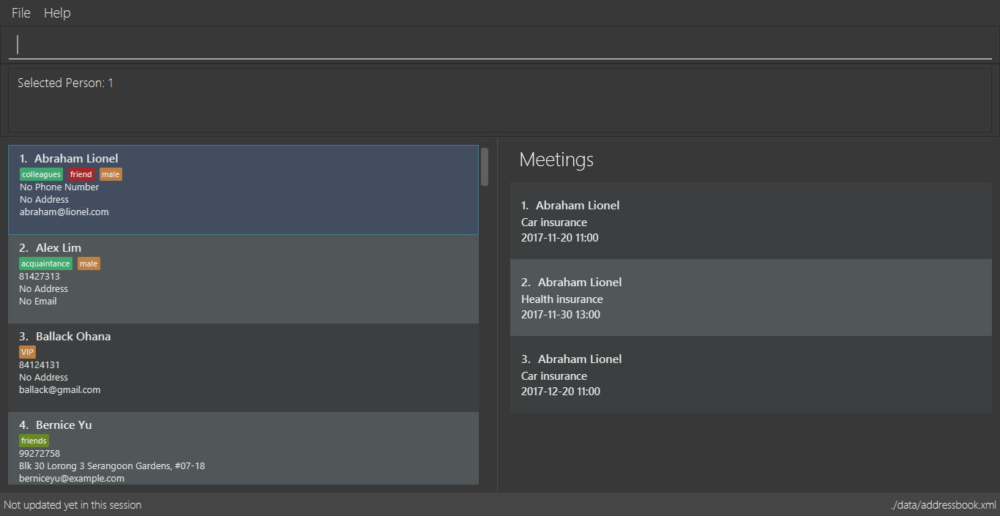
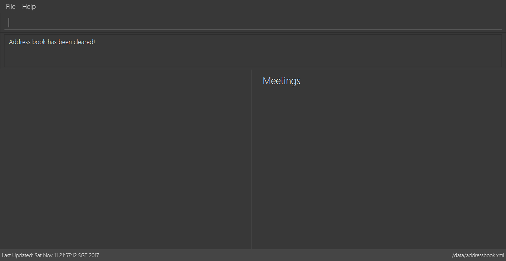
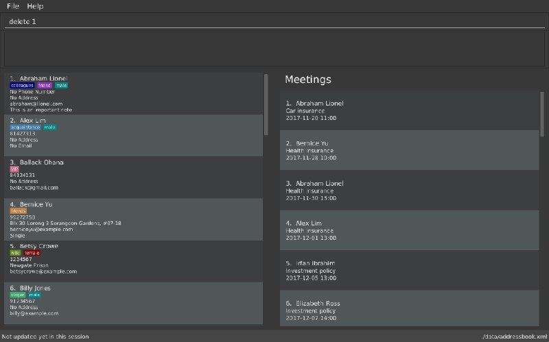
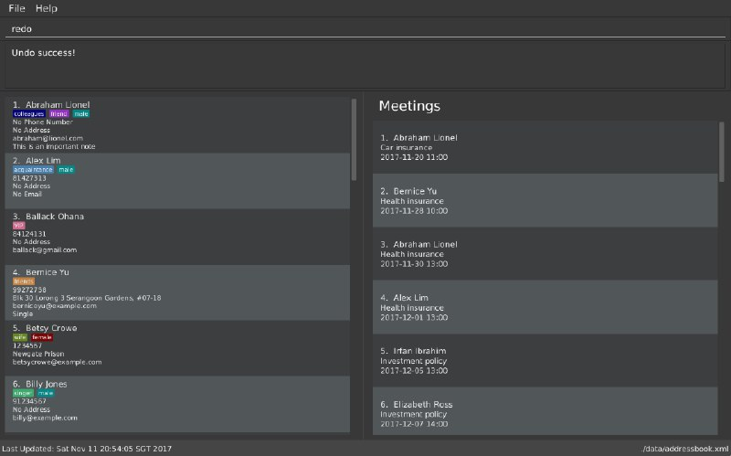
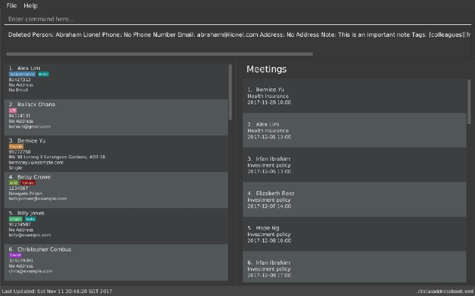
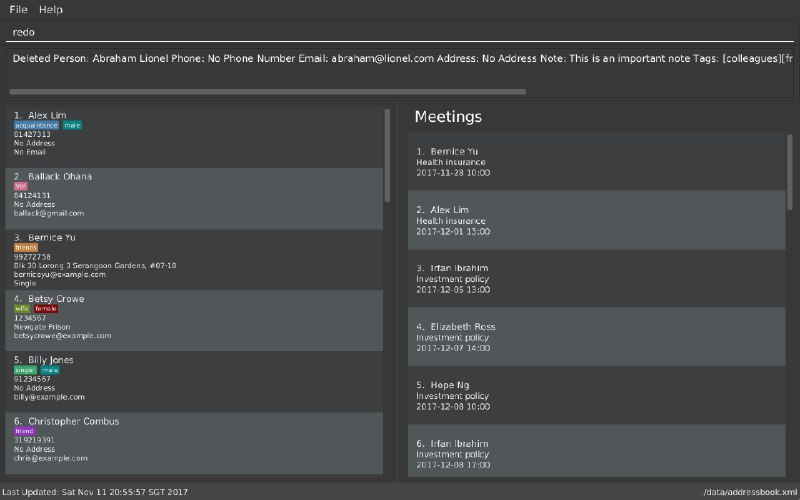
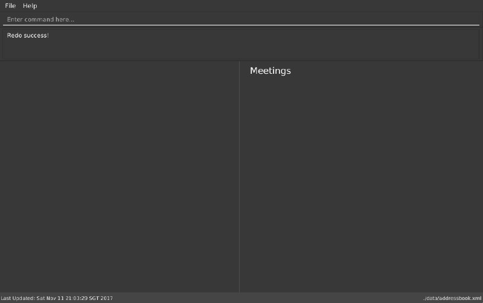

Project: AddressBook - Level 4
AddressBook - Level 4 is a desktop address book application used for teaching Software Engineering principles. The user interacts with it using a CLI, and it has a GUI created with JavaFX. It is written in Java, and has about 6 kLoC.
Code contributed: [Functional code] [Test code] {give links to collated code files}
Undoing previous command : undo
Command Name: undo
Shorthand Alias: u
Function: Restore the address book to the state where the previous undoable command was not executed.
Format: undo
|
Undoable commands: those commands that modify the address book’s content. They include |
When you delete a contact by accident:
-
Remove the first contact. (Figure 4.17.1)
>> delete 1

Figure 4.17.1 -
Type in the
undocommand. (Figure 4.17.2)
>> undo

Figure 4.17.2 -
Press Enter and you should see that the effects of
delete 1has been reverted. (Figure 4.17.3)

Figure 4.17.3
The following are more examples to help you better understand the undo command:
-
Failure to
undoas there are no undoable commands executed previously.-
Restart the application.
-
Select the first contact. (Figure 4.17.4)
>> select 1

Figure 4.17.4 -
List all the contacts. (Figure 4.17.5)
>> list

Figure 4.17.5 -
Type in
undoand you will see an error message. (Figure 4.17.6)
>> undo

Figure 4.17.6
-
-
Attempting to
undomultiple commands.-
Delete the first contact. (Figure 4.17.7)
>> delete 1

Figure 4.17.7 -
Clear out all the contacts. (Figure 4.17.8)
>> clear
Figure 4.17.8 -
Type in the shorthand alias for
undo(Figure 4.17.9)
>> u

Figure 4.17.9 -
Press Enter and you should see that the
clearcommand is reverted. (Figure 4.17.10)+
Figure 4.17.10 -
Type in
undoand you should see that thedelete 1command is reverted as well. (Figure 4.17.11)+>> undo

Figure 4.17.11
-
Redoing the previously undone command : redo
Command Name: redo
Shorthand Alias: r
Function: Reverts the most recent undo command.
Format: redo
You delete a contact and undo the delete by mistake:
-
Type in the command to delete the first contact. (Figure 4.18.1)
>> delete 1

Figure 4.18.1 -
Press Enter and the contact is removed. (Figure 4.18.2)+

-
Type in
undoby mistake. (Figure 4.18.3)
>> undo
Figure 4.18.3 -
Enter the command
redoto revert theundocommand. (Figure 4.18.4)
>> redo

Figure 4.18.4 -
Press Enter and you shoud see that the
undocommand has been reverted and the contact remains deleted. Refer to Fig to see that you have obtained the correct results. (Figure 4.18.5)

Figure 4.18.5
The following are more examples to help you better understand the redo command.
-
Failure to
redoas there are noundocommands executed previously:-
Select a contact to delete. (Figure 4.18.6)
>> delete 1
Figure 4.18.6 -
Type in the
redocommand. (Figure 4.18.7)+>> redo
Figure 4.18.7 -
Press Enter and you should see an error message. (Figure 4.18.8)

Figure 4.18.8
-
-
Attempting to
redomultiple commands:-
Select a contact to delete. (Figure 4.18.9)
>> delete 1
Figure 4.18.9 -
Remove all the contacts by
clearcommand. (Figure 4.18.10)
>> clear
Figure 4.18.10 -
Type in
undoto revert theclearcommand. (Figure 4.18.11)
>> undo

Figure 4.18.11 -
Type in
undoto revert thedelete 1command. (Figure 4.18.12)
>> undo

Figure 4.18.12 -
Type in
redoto reapply thedelete 1command. (Figure 4.18.13)
>> redo

Figure 4.18.13 -
Type in
redoto reapply theclearcommand. (Figure 4.18.14)
>> redo

Figure 4.18.14
-
End of Extract
Justification
{Justify the need for, and the current design (i.e. external behavior) of, the feature}
Undo/Redo mechanism
Mechanism
The undo/redo mechanism is facilitated by an UndoRedoStack, which resides inside LogicManager. It supports undoing and redoing of commands that modifies the state of the address book (e.g. add, edit). Such commands will inherit from UndoableCommand.
UndoRedoStack only deals with UndoableCommands. Commands that cannot be undone will inherit from Command instead. The following diagram shows the inheritance diagram for commands:

As can be seen from the diagram, UndoableCommand adds an extra layer between the abstract Command class and concrete commands that can be undone, such as the DeleteCommand. Note that extra tasks need to be done when executing a command in an undoable way, such as saving the state of the address book before execution. UndoableCommand contains the high-level algorithm for those extra tasks while the child classes implements the details of how to execute the specific command. Note that this technique of putting the high-level algorithm in the parent class and lower-level steps of the algorithm in child classes is also known as the template pattern.
Commands that are not undoable are implemented this way:
public class ListCommand extends Command {
@Override
public CommandResult execute() {
// ... list logic ...
}
}With the extra layer, the commands that are undoable are implemented this way:
public abstract class UndoableCommand extends Command {
@Override
public CommandResult execute() {
// ... undo logic ...
executeUndoableCommand();
}
}
public class DeleteCommand extends UndoableCommand {
@Override
public CommandResult executeUndoableCommand() {
// ... delete logic ...
}
}Suppose that the user has just launched the application. The UndoRedoStack will be empty at the beginning.
The user executes a new UndoableCommand, delete 5, to delete the 5th person in the address book. The current state of the address book is saved before the delete 5 command executes. The delete 5 command will then be pushed onto the undoStack (the current state is saved together with the command).

As the user continues to use the program, more commands are added into the undoStack. For example, the user may execute add n/David … to add a new person.

If a command fails its execution, it will not be pushed to the UndoRedoStack at all.
|
The user now decides that adding the person was a mistake, and decides to undo that action using undo.
We will pop the most recent command out of the undoStack and push it back to the redoStack. We will restore the address book to the state before the add command executed.

If the undoStack is empty, then there are no other commands left to be undone, and an Exception will be thrown when popping the undoStack.
|
The following sequence diagram shows how the undo operation works:

The redo does the exact opposite (pops from redoStack, push to undoStack, and restores the address book to the state after the command is executed).
If the redoStack is empty, then there are no other commands left to be redone, and an Exception will be thrown when popping the redoStack.
|
The user now decides to execute a new command, clear. As before, clear will be pushed into the undoStack. This time the redoStack is no longer empty. It will be purged as it no longer make sense to redo the add n/David command (this is the behavior that most modern desktop applications follow).

Commands that are not undoable are not added into the undoStack. For example, list, which inherits from Command rather than UndoableCommand, will not be added after execution:

The following activity diagram summarize what happens inside the UndoRedoStack when a user executes a new command:

Design Considerations
Aspect: Implementation of UndoableCommand
Alternative 1 (current choice): Add a new abstract method executeUndoableCommand()
Pros: We will not lose any undone/redone functionality as it is now part of the default behaviour. Classes that deal with Command do not have to know that executeUndoableCommand() exist.
Cons: Hard for new developers to understand the template pattern.
Alternative 2: Just override execute()
Pros: Does not involve the template pattern, easier for new developers to understand.
Cons: Classes that inherit from UndoableCommand must remember to call super.execute(), or lose the ability to undo/redo.
Aspect: How undo & redo executes
Alternative 1 (current choice): Saves the entire address book.
Pros: Easy to implement.
Cons: May have performance issues in terms of memory usage.
Alternative 2: Individual command knows how to undo/redo by itself.
Pros: Will use less memory (e.g. for delete, just save the person being deleted).
Cons: We must ensure that the implementation of each individual command are correct.
Aspect: Type of commands that can be undone/redone
Alternative 1 (current choice): Only include commands that modifies the address book (add, clear, edit).
Pros: We only revert changes that are hard to change back (the view can easily be re-modified as no data are lost).
Cons: User might think that undo also applies when the list is modified (undoing filtering for example), only to realize that it does not do that, after executing undo.
Alternative 2: Include all commands.
Pros: Might be more intuitive for the user.
Cons: User have no way of skipping such commands if he or she just want to reset the state of the address book and not the view.
Additional Info: See our discussion here.
Aspect: Data structure to support the undo/redo commands
Alternative 1 (current choice): Use separate stack for undo and redo
Pros: Easy to understand for new Computer Science student undergraduates to understand, who are likely to be the new incoming developers of our project.
Cons: Logic is duplicated twice. For example, when a new command is executed, we must remember to update both HistoryManager and UndoRedoStack.
Alternative 2: Use HistoryManager for undo/redo
Pros: We do not need to maintain a separate stack, and just reuse what is already in the codebase.
Cons: Requires dealing with commands that have already been undone: We must remember to skip these commands. Violates Single Responsibility Principle and Separation of Concerns as HistoryManager now needs to do two different things.
End of Extract
Enhancement Proposed: Add command remark
{Explain similar to the Undo/Redo feature above.}
Project: PowerPointLabs
{Optionally (not graded), you may include other projects in your portfolio.}